00:00数十年前，神经网络刚被发明出来的时候，最初的动机是编写能模仿人类大脑，或者说模仿生物大脑学习方式的软件。
00:13即便到了今天，神经网络，有时也叫人工神经网络，已经跟我们任何人想象中大脑的实际工作和学习方式大相径庭了，但当我们今天思考人工神经网络或计算机神经网络时，仍然保留了一些来自生物学的启发。
00:34那么，我们首先来看看大脑是如何工作的，以及这和神经网络有什么关系。
00:40人类大脑，或者更广义地说，生物大脑，展现出的智能水平，或者说能力水平，要远超我们迄今为止能制造的任何东西。N。
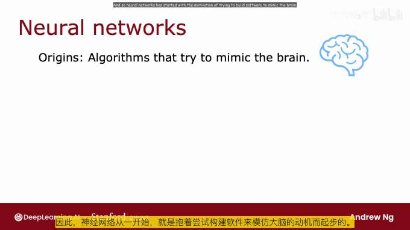
00:52因此，神经网络从一开始，就是抱着尝试构建软件来模仿大脑的动机而起步的。
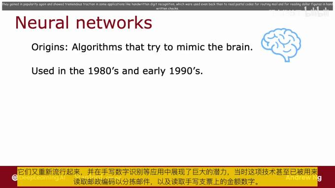
01:00神经网络的研究工作始于二十世纪五十年代，之后一度陷入低潮。
01:07接着，在二十世纪八十年代和九十年代初期，它们又重新流行起来，并在手写数字识别等应用中展现了巨大的潜力，当时这项技术甚至已被用来读取邮政编码以分拣邮件，以及读取手写支票上的金额数字。
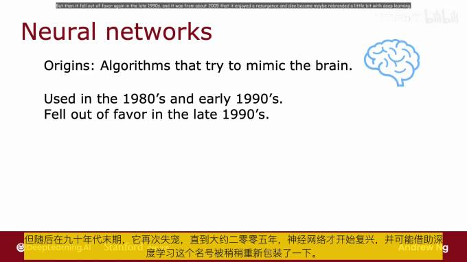
01:29但随后在九十年代末期，它再次失宠，直到大约二零零五年，神经网络才开始复兴，并可能借助深度学习这个名号被稍稍重新包装了一下。n。
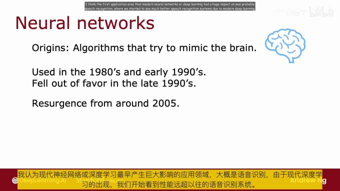
01:44当时让我感到惊讶的一件事是，深度学习和神经网络的含义非常相似。
01:51但我当时可能低估了深度学习这个词听起来有多好，因为它既有深度，又是学习。
02:00结果，这成了过去十年到十五年里大获成功的那个品牌。
02:06从那以后，神经网络彻底变革了一个又一个应用领域。
02:12我认为现代神经网络或深度学习最早产生巨大影响的应用领域，大概是语音识别，由于现代深度学习的出现，我们开始看到性能远超以往的语音识别系统。
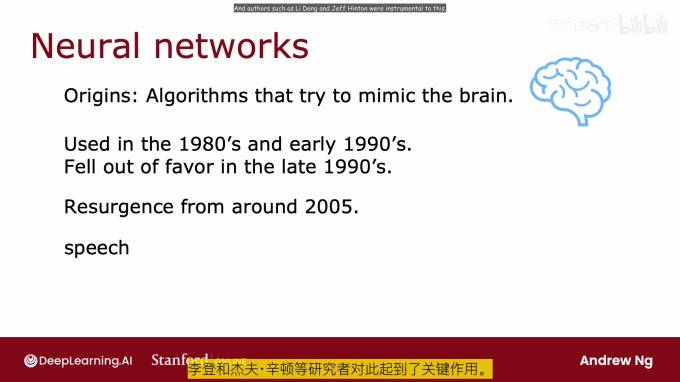
02:29李登和杰夫·辛顿等研究者对此起到了关键作用。
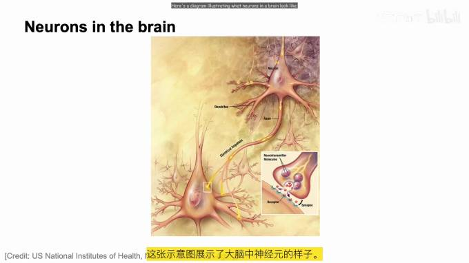
02:34接着，它开始进军计算机视觉领域。
02:39人们有时仍会提起二零一二年的那个时刻。
02:44那可能是一次更大的轰动，它由此激发了更广泛的想象力，并对计算机视觉产生了巨大影响。
02:54之后几年，它又进入了文本或者说自然语言处理等一个接一个的领域。
03:00而如今，神经网络的应用无所不包，从气候变化到医学影像，从在线广告到产品推荐。
03:10真的，现在机器学习的很多应用领域都在使用神经网络。
03:18尽管今天的神经网络几乎与大脑的学习方式毫无关系，但早期的动机确实是尝试构建软件来模仿大脑。
03:29那么，大脑是如何工作的呢？
03:32这张示意图展示了大脑中神经元的样子。
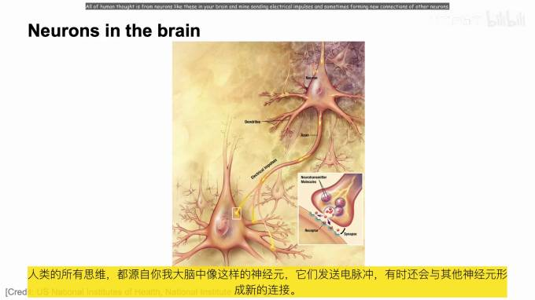
03:36人类的所有思维，都源自你我大脑中像这样的神经元，它们发送电脉冲，有时还会与其他神经元形成新的连接。
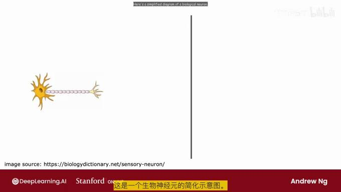
03:48像这样一个神经元，它有许多输入，用来接收来自其他神经元的电脉冲。
03:57然后，我圈出来的这个神经元会进行一些计算，再通过这些电脉冲将它的输出发送给其他神经元。
04:08而上面这个神经元的输出，接着又会成为下面这个神经元的输入，后者再次聚合来自多个其他神经元的输入，然后可能将自己的输出发送给更多别的神经元。
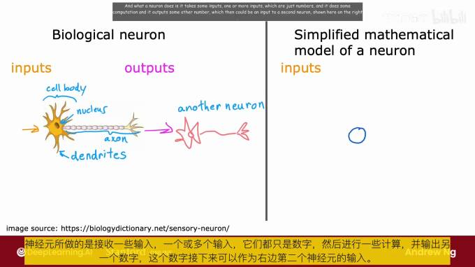
04:23人类的思维正是由此构成的。
04:28这是一个生物神经元的简化示意图。
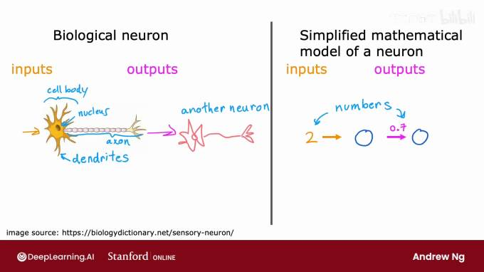
04:32一个神经元包含一个细胞体，如图所示在左边。
04:38如果你上过生物课，可能认得这是神经元的细胞核。
04:45正如我们在上一张幻灯片所见，神经元有不同的输入。
04:51在生物神经元中，这些输入线被称为树突。
04:57然后，它偶尔会通过被称为轴突的输出线，向其他神经元发送电脉冲。
05:05别担心这些生物学术语。如果你在生物课上见过，也许还记得，但为了构建人工神经网络，你并不需要记住它们中的任何一个。
05:16不过，这个生物神经元随后可能会发送电脉冲，成为另一个神经元的输入。
05:25而人工神经网络使用的，则是对生物神经元功能的一个高度简化的数学模型。
05:34我在这里画一个小圆圈，表示一个单一的神经元。
05:41神经元所做的是接收一些输入，一个或多个输入，它们都只是数字，然后进行一些计算，并输出另一个数字，这个数字接下来可以作为右边第二个神经元的输入。


05:59当你构建一个人工神经网络或深度学习算法时，往往不是一次只构建一个神经元，而是经常需要同时模拟许多这样的神经元。N。
06:11于是，在这张图里，我画了三个神经元。
06:18这些神经元共同完成的工作是：输入几个数字，进行一些计算，然后输出。
06:27现在，我要给出一个重要的提醒：尽管我在生物神经元和人工神经元之间做了一个粗略的类比，但我认为如今我们对人类大脑如何工作几乎还是一无所知。
06:41事实上，每隔几年，神经科学家就会在理解大脑如何运作方面取得一些根本性的突破，而且我认为在可预见的未来，这会一直持续下去。
06:55对我来说，这说明关于大脑的实际运作方式，还有非常多的重大发现尚未被揭示。
07:03因此，盲目模仿我们今天对人类大脑的那点了解，坦白说，我们了解的真的很少，可能并不会让我们在构建真正智能的道路上走得太远。
07:14以我们当前在神经科学领域的知识水平，肯定不行。
07:20话虽如此，即便使用我们将要讨论的这些极其简化的神经元模型，我们仍能构建出非常强大的深度学习算法。
07:32所以，当你深入学习神经网络和深度学习的知识时，即使它们的起源受到了生物学的启发，也不必过于认真地看待这种生物学动机。
07:43事实上，我们这些从事深度学习研究的人，已经不再那么关注生物学上的启发了，而是转向运用工程原理，去探寻如何构建更有效的算法。
07:56但我觉得，时不时地思考和推测一下生物神经元是如何工作的，可能仍然会很有趣。
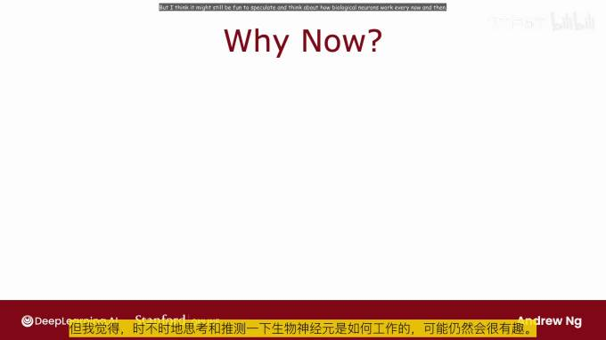
08:05神经网络的思想已经存在了几十年。
08:08所以，有人问我：嘿，安德鲁，为什么是现在？
08:13为什么神经网络仅仅在最近这几年才真正腾飞？
08:20这是我被问到这个问题时给他们画的一张图，如果别人也问你这个问题，你或许也可以画给他们看。
08:29我们来画个图，横轴表示你针对某个问题拥有的数据量，纵轴表示应用到该问题的学习算法的性能或准确度。
08:41在过去几十年里，随着互联网的兴起、手机的普及和社会的数字化，我们在很多应用上所拥有的数据量，一直在稳步向右推进。
08:54很多过去保存在纸上的记录，比如你订购东西，现在它更可能是一个数字记录，而不再是写在一张。
09:04你的健康档案，如果你去看医生，现在也远比纸质档案更可能已经是数字化的了。
09:12因此，在许多应用领域，数字数据量出现了爆炸式增长。
09:18而我们看到的是，像逻辑回归和线性回归这样的传统机器学习算法，即使你给它们喂入更多数据，也很难让性能持续提升。N。
09:33所以，情况就像是线性回归、逻辑回归这类传统学习算法，它们根本无法消化吸收。
09:40无法随着我们能喂给它的数据量而扩展规模，也无法有效利用我们为不同应用获取的所有这些数据。
09:49而 AI 研究者开始观察到，如果你在这个数据集上训练一个小型神经网络，其性能表现或许是这样的。
10:02如果你训练一个中型神经网络，也就是含有更多神经元的网络，它的性能可能是那样的。
10:10而如果你训练一个非常大型的神经网络，也就是包含大量这些人工神经元的网络，那么对于某些应用，性能会持续攀升。
10:24这意味着，对于特定类别的、确实拥有大量数据的应用，有时你会听到“大数据这个词被随口抛。
10:34如果你能够训练一个非常大的神经网络，来利用你拥有的海量数据，那么你就能在语音识别、图像识别、自然语言处理应用等等诸多领域取得性能表现，这些是早期几代学习算法根本无法实现的。而这就促成了深度学习算法的腾飞。
10:58这也是为什么更快的计算机处理能力，包括 GPU（图形处理器）的兴起，这种硬件最初是为了生成漂亮的计算机图形而设计的。
11:12但结果证明它对深度学习也非常强大。
11:17这也是使深度学习算法能够发展到今天这个地步的一股主要推动力。
11:24这就是神经网络的开端，以及它们为何在过去几年里如此迅速地崛起。
11:30现在，让我们更深入地探究神经网络实际是如何工作的细节。